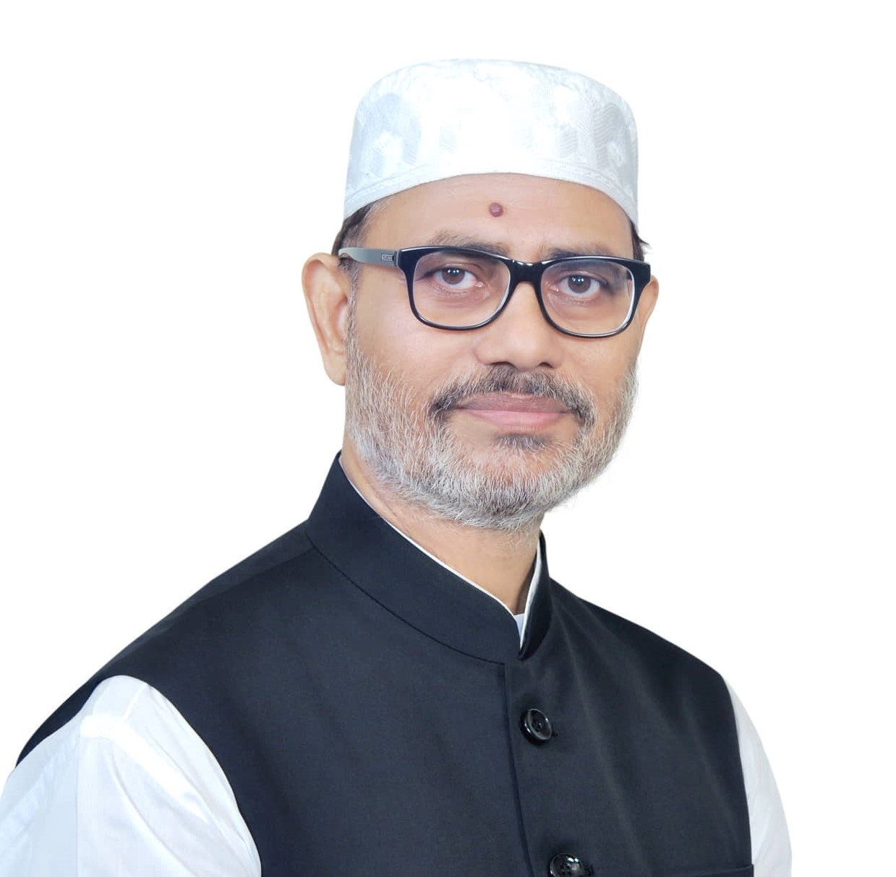

Principal M A Sattar
Founder Chairman & Principal
Founder, Principal M. A. Sattar Trust

Prof. Md Mostafizur Rhaman
Advisor, Shyamoli Ideal Polytechnic Institutebr
Former Chairman,
Bangladesh Technical Education Board

Mohammad Shahjahan
Director, Shyamoli Ideal Polytechnic Institute